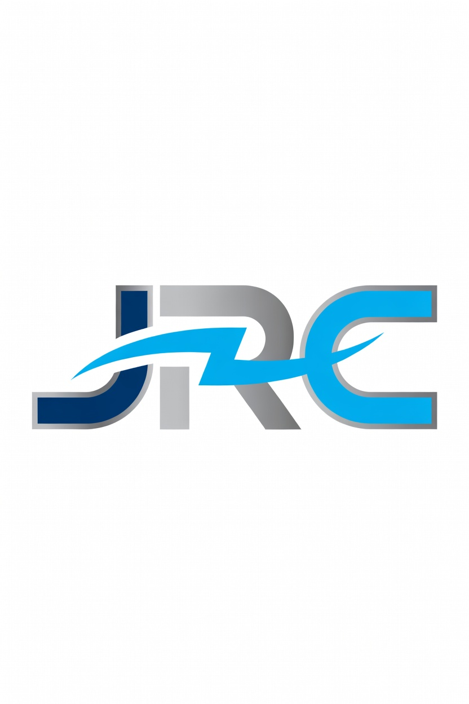
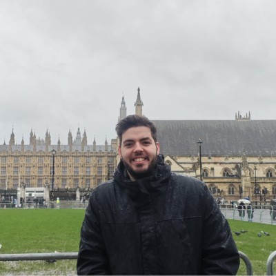

Ingeniero Eléctrico | Protección, Control y Automatización

Ingeniero eléctrico con sólida formación en sistemas de protección, control y automatización de redes de transporte y distribución eléctrica. Cuento con experiencia en ajuste de protecciones, pruebas de relés, coordinación de esquemas y análisis de fallos. Acostumbrado a trabajar en proyectos de subestaciones de alta tensión, asegurando el cumplimiento de estándares técnicos y la fiabilidad del sistema eléctrico nacional.
📥 Descargar Mi CV Completo (PDF)Software y Herramientas:
Competencias profesionales: Gestión de proyectos, trabajo en equipo, resiliencia, adaptabilidad y proactividad.
Idiomas: Inglés (Competencia profesional).
Otros datos de interés: Voluntario de apoyo y logística en residencias de la tercera edad con las Misioneras de la Caridad.